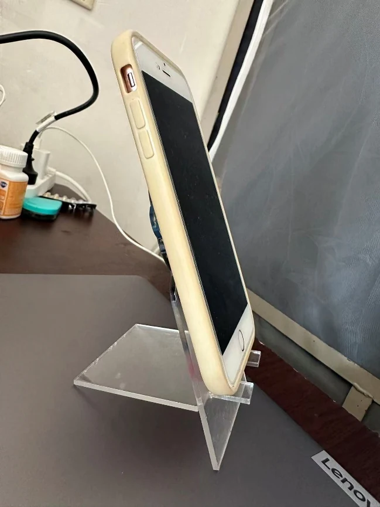
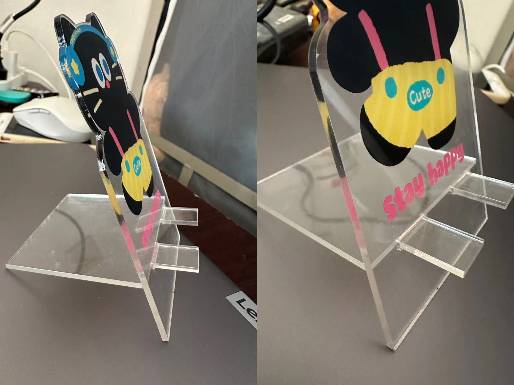
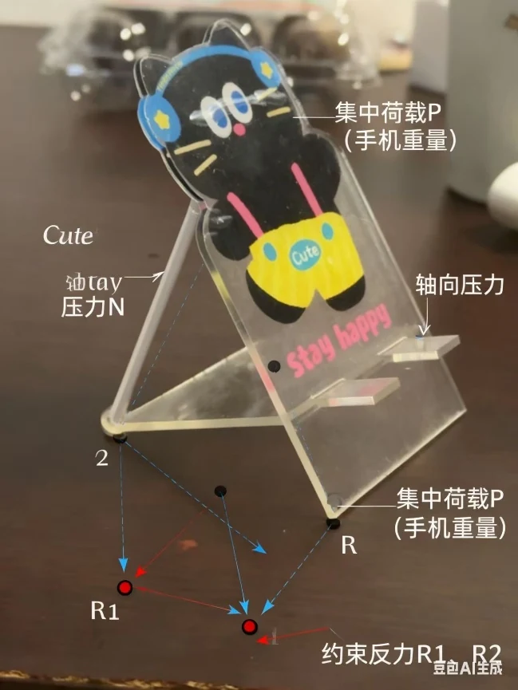

大连交通大学 · 智能建造23
我的原作生活中的结构设计——手机支架
王鹤潼
一、表达力学问题
1. 意义
它是“小型轻质结构的实用力学设计”的典型案例：通过简单的几何支撑+受力分解，实现“承载功能+轻量化+低成本”的平衡，既让日常小物件（手机支架）满足使用需求，也体现了“力学原理服务生活产品”的实用价值。
2. 影响因素
（1）荷载大小：手机重量（集中荷载P）越大，轴向压力和约束反力的数值也会同步增大；
（2）支撑角度：支架的倾斜角度会改变轴向压力的分解比例（角度越陡，轴向受压越明显）；
（3）材料刚度：亚克力的刚度决定了构件是否会在荷载下变形（刚度不足易弯曲）；
（4）支撑节点稳定性：底部支撑点的接触面积/连接强度，影响约束反力的传递效率。
3. 趋势
这类小型生活结构的力学设计，会朝着“更轻量化（新型轻质材料）+更精准受力（参数化优化支撑角度）+更集成化（功能+结构一体化）”发展，比如结合3D打印实现定制化受力结构。
4. 力学图示
（1）荷载：手机重量为集中荷载P（作用于支架托脚处）；
（2）内力：支撑杆承受轴向压力N（沿杆轴线传递）；
（3）约束反力：桌面提供的R1、R2（平衡荷载，维持结构稳定）；
（4）受力关系：P通过面板传递→分解为轴向压力→底部约束反力平衡，最终满足“合力为零”的静力学平衡条件。

二、生活中体现
1. 照片
• 主体照片

2. 受力/变形标注
主体照片标注：

3. 配文说明
（1）支撑形式：用三角形支架（2点+R点）形成稳定支撑，利用三角形的几何稳定性分散受力~
（2） 荷载传递：手机重量（集中荷载P）会通过支架面板，分解为轴向压力（沿支架杆传递），再由底部的约束反力R1、R2平衡，避免支架倾倒或变形。
三、对照《结构设计原理》内容
1.构件设计逻辑
（1） 面板（主体）：采用亚克力材质，兼具轻质与一定刚度——既能承载手机重量（集中荷载P），又不会因自重过大增加支撑负担；同时通过卡通造型的“加厚区域”（如猫咪图案部分）增强局部刚度，避免面板弯曲变形。
（2）支撑杆：选用细长的亚克力杆，利用“轴向受压”的力学特性（杆件轴向受力时，材料的抗压性能更易发挥），将面板的荷载沿杆传递到底部，减少弯矩产生。
2.节点连接考量
（1）支撑杆与面板/底座的连接：采用“一体式切割+局部加厚”的方式（亚克力支架多为整体激光切割），节点处无额外连接件，既保证了连接的刚度（避免节点松动），又简化了加工工艺，同时让应力集中区域（节点）的材料厚度增加，降低断裂风险。
（2）底部支撑点（2点、R点）：节点直接接触桌面，通过“分散布置”（形成三角形支撑面）扩大支撑范围，提升结构的抗倾覆能力。
3.结构体系优化
（1）稳定体系强化：用“三角形支撑+面板+底座”组成静定结构（无多余约束），荷载传递路径清晰（P→轴向压力→约束反力R1/R2），既能通过几何形状自稳，又能避免多余构件增加成本与自重。
（2）荷载平衡设计：将手机的集中荷载P通过“双支撑点（面板上的两个托脚）”分散，再结合底部约束反力的分布，让整体受力更均匀，减少局部过载风险。
这是一份便于网页阅读的原作视图，保留提交内容的文字、图片和基本顺序；公开页面不显示学号。